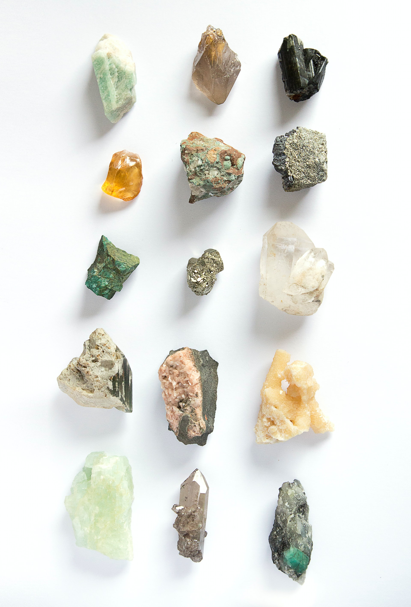

The growth and development of mushrooms present the image of proliferation, which can be discovered in the repetition of a certain form, the gradual alteration of sizes and arrangements, and a sense of rhythm coming from wrinkles and texture. Mushrooms look similar to flowers, but they are entirely different from their composition. The body of a mushroom consists of thread-like structures called hyphae, which spread wildly under where the mushrooms are. These hyphae gather and clot together, which become mushrooms, and imagining this process is crucial in expressing the image of proliferation. Tiny objects get together and eventually become one. This opens up a huge window for imagination since we never know what they will become depending on the surrounding conditions.
I chose squashy, soft clay as a material to express characteristics of mushroom wrinkles. Clay can be made thin, and stacking up these thin layers is effective to express wrinkles. Clay is white tinged with yellow, and I mix various colors with it. The process of dying clay is magnificent, and the beauty of the color itself and the images brought up by the harmony of different colors act as the starting point of my work. The colors also represent my taste and moods at that time.
I take a right amount of clay out of the lump and make it thin with a rolling pin. I make them one by one, and normally tens or hundreds of layers are used for a piece. It is not the end. I trim the edges of the layers or cut them into a specific shape so that they can be used as parts of a piece. The hyphae silently develop a strong presence, encroaching on the surroundings slowly and giving birth to mushrooms during the process of growth and decomposition. Mushrooms made from countless hyphae embody the image of proliferation, and I feel like I am executing the process of proliferation myself when I stack hundreds of clay layers. Hundreds of moments gather together and give birth to a piece of jewelry. As hyphae and mushrooms proliferate regardless of time and space, my pieces of jewelry silently proliferate.